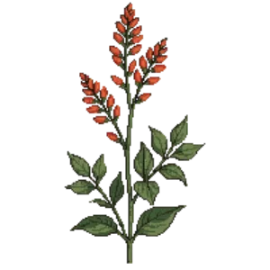

Darcy Sage
Salvia darcyi

Darcy Sage is a perennial for focal point, mid-border, suited to full sun to partial shade and loam or sandy soil, flowering Jul, Aug, Sep, Oct.
| Type | Perennial |
|---|---|
| Mature height | 90 cm |
| Spread | 90 cm |
| Aspect | full sun to partial shade |
| Foliage | Deciduous |
| Hardiness | USDA 7a-10b |
| Pollinator-friendly | Yes |
| Pet-safe | Yes |
Where to use it in a border
At around 90 cm, it sits best toward the back of a border, or on its own as a focal point with room around it. Give it about 90 cm of room to spread. It is hardy across USDA zones 7a to 10b, so check it suits your area before planting.
It appears in our lists of full sun, sandy soil, pollinator-friendly plants, pet-safe plants.
Border Builder uses Darcy Sage's height, spread, soil, bloom months and companions to place it in a full border plan for your own conditions, on iPhone and iPad.
Flowering through the year
Worth knowing
- Its flowers are valued by bees and other pollinators.
Good companions
Plants that share its conditions and style, chosen to complement its place in the border:
- Calamintto edge in front
- Catmint 'Cat's Pajamas'to edge in front
- Desert Bluebellsto edge in front
- Fire Pinkto edge in front
- Paperbushfor height behind it
- Perennial Blue Flaxto edge in front
Garden styles
Cottage garden Foundation planting Wildlife garden Xeriscape (low-water)